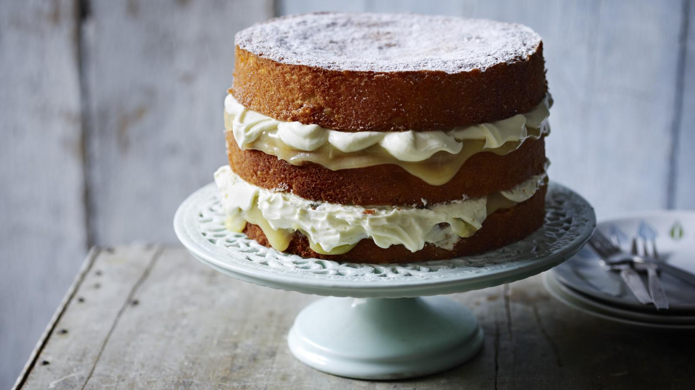

Lemon Drizzle Cake with Lemon Curd and Cream

Description
A stunning three-tiered cake filled with homemade lemon curd and cream. To save time, use a good quality ready-made lemon curd.
Ingredients
- 350g butter, softened, plus extra for greasing
- 350g caster sugar
- 4 lemons, zest only, plus juice of 2 lemons
- 3 large pieces candied lemon peel, finely chopped
- 6 free-range eggs
For the lemon curd
- 60 g butter
- 225g caster sugar
- 3 lemons, juice and zest
- 2 free-range eggs
For the filling
- 300ml double cream
- 200g icing sugar
Method
- Preheat the oven to 180C/350F/Gas 4. Grease and line three 20cm/8in sandwich tins.
- Cream the butter and sugar together in a bowl until pale and fluffy. Add the lemon zest and juice and candied peel.
- Slowly beat in the eggs, one at a time, until the mixture is well combined.
- Sift the baking powder, self raising flour and cornflour together in a bowl and fold into the cake mixture.
- Divide the cake batter among the sandwich tins and bake for 25-30 minutes or until risen and golden-brown. Remove from the oven and set aside to cool for 10 minutes. Run a round-bladed knife around the inside edge of the tins to loosen the cakes. Remove the cakes from the tins and set aside to cool completely on a rack.
- While the cakes are cooking, make the lemon curd. Heat the butter, sugar and lemon juice and zest in a bowl set over a pan of simmering water, stirring occasionally until the butter has melted and the sugar has dissolved. (Do not allow the base of the bowl to touch the surface of the water.) Remove from the heat.
- Meanwhile, beat the eggs in a separate bowl. Slowly whisk the melted butter mixture into the beaten eggs until well combined.
- Set the bowl over the pan of simmering water and cook, whisking constantly, for 2-3 minutes or until the mixture thickens enough to coat the back of a spoon.
- Sieve the lemon curd into a clean bowl, then cover with cling film and set aside to cool.
- For the filling, whip the cream and icing sugar together in a bowl until soft peaks form when the whisk is removed.
- Place one of the cakes onto a serving plate and spread with the lemon curd. Spread over some of the whipped cream and sandwich with another cake. Repeat the process with the remaining lemon curd, whipped cream and cake tiers. Dust with icing sugar.